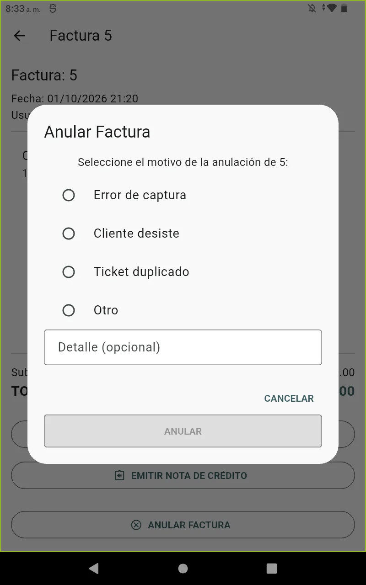

Facturación DGI · DT 09-2007 · Nicaragua
Sistema de facturación DGI en Nicaragua: la mecánica que exige la DT 09-2007
Régimen vigente en Nicaragua: facturación computarizada, no factura electrónica.
NHILOS garantiza la mecánica que exige la DT 09-2007: consecutivo inalterable, anulación solo con motivo auditado y libros exportables. La autorización, carta, código y numeración, la posee tu negocio como contribuyente.
El marco vigente
¿La factura que emite NHILOS POS es válida ante la DGI?
En Nicaragua el régimen vigente es la facturación computarizada (Sistema de Facturación Computarizada, DT 09-2007 y artículo 143 de la Ley 822). NHILOS POS opera dentro de ese régimen y no pretende ser factura electrónica, que no existe como validación en línea en el país.
Tu negocio obtiene y mantiene ante la DGI su carta de autorización, su código y el rango de numeración asignado. Sin esa autorización vigente, ningún sistema vuelve válida una factura por sí solo.
El sistema ejecuta las reglas operativas que exige la DT 09-2007: consecutivos que no se editan ni se saltan, anulaciones con motivo y rastro inmutable, y libros de ventas exportables para tu contador.
Quién tramita qué
¿Necesito autorización de la DGI? ¿Quién la tramita?
Sí. La autorización de facturación (carta de autorización, código y numeración autorizada) la obtiene y la posee cada negocio como contribuyente ante la DGI. NHILOS no emite autorizaciones ni gestiona trámites fiscales en tu nombre.
Durante la implementación (Paso 04) se registran tu RUC y los datos de tu autorización vigente para configurar el prefijo y el folio inicial desde el cual el sistema comienza a emitir comprobantes.
Qué es la carta de autorización, en palabras simples
Es el respaldo que la DGI otorga a tu negocio para emitir comprobantes bajo el Sistema de Facturación Computarizada con una serie y numeración determinadas. Los requisitos exactos y formularios vigentes del trámite debes confirmarlos directamente con tu contador antes de solicitarla.
Inicio del correlativo
¿Sirve mi numeración actual o hay que empezar de cero?
NHILOS POS no inventa numeración: comienza a numerar desde el folio inicial que define tu autorización registrada en la configuración del sistema.
Al configurar tu operación, se carga el prefijo y el folio inicial respaldados por tu autorización. A partir de la primera venta, cada comprobante avanza en secuencia estricta sin edición manual.
No renumera el pasado ni absorbe folios de sistemas anteriores o de talonarios en papel. Si ya facturas con otro esquema, tu contador define la continuidad junto con la implementación antes de la primera venta.

Escenario crítico en caja
¿Qué pasa cuando hay que anular una factura? Paso a paso
Anular una venta en mostrador no significa borrar un registro. Así ocurre el proceso completo cuando hay un error de captura, un ticket duplicado o un cliente que desiste:
- 01 La factura nunca se elimina. No existe borrado físico de comprobantes en el sistema; la factura permanece visible y marcada como anulada.
- 02 Motivo obligatorio. El operador selecciona el motivo formal en el diálogo de anulación (Error de captura, Cliente desiste, Ticket duplicado u Otro) y puede agregar detalle opcional. Sin motivo el proceso no avanza.
- 03 Autorización de supervisor. En el paso siguiente, un supervisor (propietario o gerente) autoriza la operación con su PIN personal.
- 04 Nota de Crédito con folio correlativo propio. El sistema genera la Nota de Crédito con su propio consecutivo y la deja vinculada a la factura original.
- 05 Registro inmutable de auditoría. Queda guardado quién autorizó, cuándo ocurrió, el motivo y desde qué terminal se ejecutó la anulación.
- 06 Reversión trazable en inventario. Si la venta había descontado stock o insumos, el movimiento inverso queda reflejado en el kardex sin borrar el movimiento original.
- 07 Exportación limpia para el contador. Al cierre del periodo, tu contador exporta el detalle de ventas junto con sus anulaciones y notas de crédito vinculadas.
Por qué una anulación bien hecha protege tu numeración
La secuencia fiscal sigue sin saltos ni huecos: la factura anulada conserva su número original marcada como anulada, y la Nota de Crédito lleva su propio correlativo. Así el libro cuadra de principio a fin sin parches manuales.

La disposición en lenguaje llano
Lo que la DT 09-2007 le pide a la facturación computarizada
La Disposición Técnica 09-2007 establece reglas concretas para los Sistemas de Facturación Computarizada en Nicaragua. En operación diaria, el sistema implementa tres mecánicas verificables:
Numeración consecutiva inalterable
El sistema asigna automáticamente el siguiente número de comprobante. No existe botón para editar folios, saltar números ni reutilizar un consecutivo ya emitido.
Anulación con motivo y rastro
Nada se borra de la base de datos. Cada anulación exige motivo formal, autorización de supervisor y genera una Nota de Crédito vinculada a la factura original.
Libros de ventas exportables
Cuando tu contador pide el cierre del mes o el resumen fiscal del periodo, los reportes de ventas, anulaciones y notas de crédito se exportan directo desde el panel web.
Correlatividad sin alteraciones, trazabilidad de anulaciones y respaldo documental conforme a la DT 09-2007 y el artículo 143 de la Ley 822. Cualquier requisito adicional de trámite o conservación se confirma con tu contador.
Muchos negocios consolidan cierres diarios por turno y preparan una carpeta mensual con ventas gravables, exentas, IVA recaudado y notas de crédito para facilitar el trabajo contable.
NHILOS POS añade registro encadenado de eventos críticos, validación sintáctica de cédula y RUC para evitar errores de dedo y operación local sin internet con sincronización ordenada.

Responsabilidades claras
Qué garantiza NHILOS y qué le corresponde a tu negocio
Una relación tributaria sana empieza por no confundir el rol del software con el rol del contribuyente. Esta es la línea exacta que tu contador puede revisar punto por punto:
Garantiza NHILOS
Mecánica operativa verificada en código- Numeración consecutiva que no se puede saltar ni editar: el sistema asigna el siguiente comprobante, sin botón de edición de folio.
- Nada se borra: no existe eliminación física de facturas.
- Anulación solo con motivo formal, autorizada con PIN de supervisor y registrada con quién, cuándo y por qué.
- Nota de Crédito con folio correlativo propio, vinculada a la factura original.
- Registro con fecha, hora, terminal y usuario de cada evento crítico.
- Libros de ventas y reportes fiscales exportables cuando el contador los pida.
- El correlativo sigue operando sin internet y sincroniza en orden, sin duplicar, al reconectar.
- Validación algorítmica de cédula y RUC: sintáctica, sin consulta al padrón en línea.
Le corresponde a tu negocio
Obligación propia del contribuyente- Obtener y mantener tu autorización de facturación ante la DGI: la carta, el código y la numeración autorizada.
- Entregar el RUC y los datos de tu autorización para configurar prefijo y folio inicial (Paso 04 de implementación).
- Emitir tus comprobantes en la forma autorizada a tu negocio, incluida la impresión del comprobante, que hoy depende del hardware del cliente.
- Conservar tus comprobantes y libros por el plazo legal: el plazo exacto lo confirma tu contador.
- Entregar a tu contador la información del periodo: los libros exportables salen del sistema, la interpretación es del contador.
- Responder ante la DGI: la relación tributaria es del contribuyente; NHILOS no te representa ni hace trámites.
La otra mitad de una revisión es física: los conteos y el historial de existencias muestran de dónde salió cada unidad vendida, en el control de inventario y kardex.
Sin exagerar ni prometer resultados
¿Y si llega una revisión de la DGI?
Ningún software puede garantizar el resultado de una inspección. Lo que sí cambia el escenario es llegar con los registros ordenados y consistentes en lugar de reconstruir ventas a mano.
La secuencia completa de comprobantes sin saltos, cada anulación con su motivo, su responsable y su Nota de Crédito vinculada, y los libros de ventas del periodo exportables en limpio para entregarlos a tu contador.
No responde ni comparece por el negocio. Mantener vigente la autorización, conservar comprobantes y libros por el plazo legal (confirmado por tu contador) y atender cualquier requerimiento ante la DGI sigue siendo responsabilidad del contribuyente.
Recomendación práctica: trabaja con tu contador para mantener preparada tu carpeta fiscal del periodo; NHILOS POS le entrega los datos ordenados para que no pierda horas conciliando tickets sueltos.
Hardware y estado actual
¿Qué pasa si uso una impresora que NHILOS no soporta?
El registro fiscal, el correlativo, la inmutabilidad, las anulaciones auditadas y los libros exportables no dependen de la impresora. Respecto a la impresión física del comprobante, el estado actual es este:
La impresión integrada opera en terminales Android con impresora térmica incorporada (Sunmi e iPOS), configuradas durante la implementación.
La impresión externa de facturas en ticketeras genéricas sigue abierta y en evaluación, por lo que no se promete. La emisión en la forma autorizada corresponde al negocio y se revisa con tu hardware antes de empezar.
Si quieres conocer el sistema completo antes de evaluar equipo, revisa qué es NHILOS POS: venta local-first o pasa directo a ver planes y precios de NHILOS POS.
Respuestas directas
Preguntas frecuentes sobre facturación DGI y DT 09-2007
¿NHILOS POS está autorizado por la DGI?
No: en Nicaragua, NHILOS POS no posee autorización de la DGI porque la autorización fiscal, carta, código y numeración, corresponde a cada negocio como contribuyente. NHILOS POS garantiza la mecánica que exige la DT 09-2007: consecutivo inalterable, anulación solo con motivo auditado y libros exportables.
¿Necesito carta de autorización para facturar con sistema computarizado?
Sí: en Nicaragua, el régimen de Sistema de Facturación Computarizada requiere carta de autorización de la DGI para operar con NHILOS POS o cualquier sistema computarizado. El trámite corresponde al contribuyente; confirma los requisitos vigentes con tu contador.
¿Puedo anular una factura en NHILOS POS?
Sí: en Nicaragua, NHILOS POS permite anular facturas sin borrarlas, exigiendo motivo obligatorio, autorización con PIN de supervisor y Nota de Crédito con folio correlativo propio vinculada a la factura original. Todo el evento queda registrado con fecha, hora, terminal y usuario.
¿NHILOS POS es factura electrónica?
No: en Nicaragua, NHILOS POS opera bajo el régimen de facturación computarizada regulado por la DT 09-2007 y el artículo 143 de la Ley 822, no como factura electrónica. No existe validación en línea de factura electrónica en el país.
¿Qué pasa con mi facturación si se cae el internet?
En Nicaragua, si se cae el internet, NHILOS POS sigue asignando el correlativo desde la terminal enrolada y sincroniza los comprobantes en orden, sin duplicar, al reconectar. Mientras no haya red, la terminal sigue emitiendo sola; lo que espera la conexión es el envío, no el cobro.
¿NHILOS POS imprime la factura en mi impresora?
En Nicaragua, NHILOS POS imprime hoy de forma integrada en terminales con impresora térmica Sunmi o iPOS. La impresión externa en ticketera genérica está en evaluación y no se promete, aunque el registro fiscal, el correlativo, las anulaciones auditadas y los libros exportables no dependen de la impresora.
¿Qué le entrego a mi contador?
En Nicaragua, desde NHILOS POS le entregas a tu contador los libros de ventas y los reportes fiscales exportables del periodo, junto con el detalle de facturas anuladas y sus notas de crédito vinculadas. La declaración, la interpretación tributaria y el archivo legal quedan a cargo de tu contador.
Revisión con tu caso real
Solicita una demo con tu operación fiscal real
Te mostramos en vivo el historial de comprobantes, el flujo completo de anulación con motivo y Nota de Crédito, y la exportación de libros del periodo usando datos de demostración etiquetados. Si quieres que tu contador participe en la sesión, mejor.